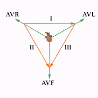
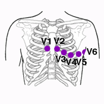

Anatomía de las Derivaciones
El ECG estándar de 12 derivaciones puede entenderse como 12 "fotografías" del corazón tomadas desde ángulos diferentes. Cada derivación registra la actividad eléctrica desde una perspectiva distinta, lo que permite localizar con precisión los eventos cardíacos.
Objetivo del capítulo: Identificar cada una de las 12 derivaciones, su ubicación anatómica, su plano de visión y la colocación correcta de los electrodos.
1. Derivaciones del Plano Frontal (Miembros)
Las derivaciones de miembros "ven" el corazón en el plano frontal (adelante–atrás, arriba–abajo). Se obtienen con cuatro electrodos colocados en las extremidades.
Derivaciones Bipolares: I, II, III
Propuestas por Einthoven, registran la diferencia de potencial entre dos electrodos:
| Derivación | Electrodo positivo | Electrodo negativo | Visión del corazón |
|---|---|---|---|
| I | Brazo izquierdo (LA) | Brazo derecho (RA) | Lateral izquierdo |
| II | Pierna izquierda (LL) | Brazo derecho (RA) | Inferior (más usada) |
| III | Pierna izquierda (LL) | Brazo izquierdo (LA) | Inferior izquierdo |
Ley de Einthoven: La suma algebraica de las deflexiones en I, II y III siempre cumple que I + III = II. Esto sirve para verificar la correcta colocación de electrodos.
Derivaciones Unipolares Aumentadas: aVR, aVL, aVF
Desarrolladas por Goldberger, registran el potencial de un punto respecto a un terminal central de referencia (cero). La "a" significa augmented (aumentada), ya que la señal se amplifica un 50% para hacerla comparable a las bipolares.
| Derivación | Electrodo explorador | Visión del corazón | Normalidad |
|---|---|---|---|
| aVR | Brazo derecho (RA) | Cavidades derechas / desde arriba-derecha | Generalmente negativa |
| aVL | Brazo izquierdo (LA) | Lateral alto izquierdo | Variable |
| aVF | Pierna izquierda (LL) | Inferior (desde abajo) | Positiva en sinusal |

2. Derivaciones del Plano Horizontal (Precordiales)
Las derivaciones precordiales V1 a V6 exploran el corazón en el plano horizontal (izquierda–derecha, anterior–posterior). Son unipolar y su colocación exacta es crítica para evitar errores diagnósticos.
Ubicación Correcta de los Electrodos
| Derivación | Ubicación anatómica | Zona cardíaca que explora |
|---|---|---|
| V1 | 4° espacio intercostal, borde esternal derecho | Ventrículo derecho / Septo |
| V2 | 4° espacio intercostal, borde esternal izquierdo | Septo / pared anterior |
| V3 | Entre V2 y V4 | Pared anterior |
| V4 | 5° espacio intercostal, línea medioclavicular | Ápex (punta) |
| V5 | Línea axilar anterior, mismo nivel que V4 | Lateral bajo |
| V6 | Línea axilar media, mismo nivel que V4 | Lateral bajo / posterior |

Error frecuente: Colocar V1/V2 en espacios intercostales incorrectos (a veces se colocan demasiado altos, en el 2° o 3° espacio). Esto puede generar patrones falsos de bloqueo de rama derecha o de ondas Q patológicas anteriores.
Progresión Normal de la Onda R en Precordiales
En condiciones normales, la amplitud de la onda R aumenta progresivamente de V1 a V5, y luego se estabiliza o disminuye levemente en V6. Esto se conoce como progresión normal de la onda R.
- V1–V2: Predominio de onda negativa (S) → exploración del VD
- V3–V4: Zona de transición (R ≈ S)
- V5–V6: Predominio de onda positiva (R) → exploración del VI
3. El Triángulo de Einthoven
El triángulo de Einthoven es un modelo geométrico que representa las tres derivaciones bipolares (I, II, III) como los lados de un triángulo equilátero, con el corazón en el centro.
Cada lado del triángulo indica la dirección desde la que esa derivación "mira" al corazón:
- Derivación I: Eje horizontal (0°)
- Derivación II: Eje a +60°
- Derivación III: Eje a +120°
El triángulo de Einthoven es la base para calcular el eje eléctrico del QRS, tema que se desarrolla en el Capítulo 4.
4. Sistema Hexaxial de Bailey
Al combinar las 6 derivaciones de miembros (I, II, III, aVR, aVL, aVF) y trasladar sus ejes al centro del triángulo, se obtiene el sistema hexaxial de referencia, que divide el plano frontal en 12 sectores de 30° cada uno.
Los ángulos de cada derivación en el sistema hexaxial son:
| Derivación | Ángulo positivo |
|---|---|
| I | 0° |
| II | +60° |
| aVF | +90° |
| III | +120° |
| aVL | −30° |
| aVR | −150° |
Resumen del Capítulo
- Las 12 derivaciones ofrecen 12 perspectivas distintas del corazón.
- Las derivaciones de miembros (I, II, III, aVR, aVL, aVF) exploran el plano frontal.
- Las precordiales (V1–V6) exploran el plano horizontal.
- La colocación correcta de electrodos es esencial para evitar errores diagnósticos.
- El sistema hexaxial de Bailey permite calcular el eje eléctrico del corazón.